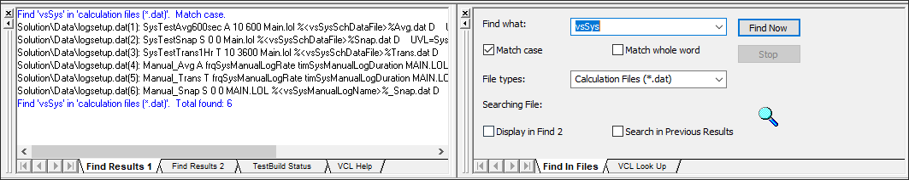

iTest User's Guide
Test Manager is a comprehensive tool for configuring your test solutions. This guide describes the different tools used to navigate within Test Manager to efficiently create solutions and prepare them for use at runtime.
The Test Manager tree bar provides an overview of the different categories that are used to configure your iTest solution. These categories create the entire basis for the solution, including features such as channels, data logs, calculations, and tests. Each category is contained in a folder, which contains files and possibly sub-folders.
Tree Bar
The table below lists each category and provides a brief description of its purpose and features.
Tree Bar Descriptions
| Category | Description | Sub-categories |
| Solution | ||
|---|---|---|
| Devices | Used to manage the physical hardware for testing. You can use this category to manage and configure devices such as drivers and I/O modules. | - |
| Channels | Used to manage iTest database channels. This category includes features such as channel/alias/customer names, attributes, and limits. | Channel Definitions Alias Names Customer Names Internal Variables Limit Groups Data Quality Groups Channel Attributes |
| Calculations | Used to create calculations performed during every system scan. This category includes files for features such as dynamic calculations, system rate calculations, and lookup tables. | 1 Hz 10 Hz 100 Hz System Rate Dynamic Calculations Lookup Tables |
| Control Loops | Used to define the Proportional Integral Derivative (PID) loops that control dyno and throttle settings when run in iTest. | Control Modes HS1 HS2 |
| Test Development | Used to develop tests and schedules that are executed during runtime. This category includes features such as VCL procedures, schedules, Python scripts, step conditions, and set value tables. | Procedures Schedules Python Scripts Step Conditions Set Value Tables |
| Data Logging | Used to create and customize logs for data logging. | Data Logs Log Order Lists Log Header Forms |
| Presentation | Contains features used to develop the iTest display, such as picklists, reports, and displays (interfaces). | Displays Reports Picklists Plot Buffer Unit Conversions |
| Test Notes | A text file used to contain solution notes such as: - Date and time modifications - Overview of modifications - Test execution notes |
- |
| Global Settings | Used to specify system properties for various category files. | - |
| Module | ||
| Modules | Used to create modular solutions. For more information, refer to the Modules documentation. | - |
If you want to create a new file or folder within a category or modify an existing file or folder, right-click an item. When you right-click an item in the tree bar, a menu displays. Menu options vary depending on the component selected. The following options are used to perform common actions:
Right-click Actions
| Action | Description |
| New ... | Creates a new file or folder within the selected category. |
| Save | Saves the file. This option is only available if a file is open in the main Display Area. |
| Duplicate | Creates a duplicate of the selected file in the tree bar with the same name as the file that was duplicated with a number appended to the name. |
| Delete | Deletes the selected file after prompting for confirmation. |
| Rename | Highlights the selected file and changes the area around it into a text box in which the file can be renamed. Press Enter after typing the new name. |
| Opens a print dialog that prints the data associated with the file selected in the tree bar. |
 |
NOTE: | You can restore deleted files using the Tools > Rollback command (not available for all files). |
The tree bar supports the following standard shortcuts: CTRL+C, CTRL+V, CTRL+X, and CTRL+Z. To use these shortcuts, the item in the tree bar must be in edit mode. To activate edit mode, select an item and press F2 or click the item twice, slowly.
Edit Mode
|
NOTE: | If you replace an entire item name, using CTRL+Z will clear the name. If you press Enter, the item will revert to its previous name. |
You can use the Helper Bar to display lists of channels, commands, functions, or mailslot messages. You can filter the lists of channel definition and mailslot messages by selecting filter criteria from the list at the top of the Helper Bar. You can also drag and drop commands, channel definitions, calculations, and mailslot messages from their corresponding lists into procedure files.
Helper Bar
The following table displays the different helper bar icons, titles, and descriptions.
Helper Bar Icon Descriptions
| Icon | Title | Description |
| Helper Bar | Opens the helper bar. | |
| Channel List | Displays the complete list of channels configured in the Channels folder. | |
| VCL Command List | Displays the list of VCL commands and their arguments. | |
| VCL Function List | Displays the list of VCL functions and their arguments. This includes function types such as math, strings, tables, operators, miscellaneous, etc. | |
 |
Messages List | Displays a list of common mailslot messages. |
To filter the lists for other options, click the drop-down button next to the name of the list you are currently viewing.
List Filter
You can drag and drop one or many channels from the helper bar into an editor. The following editors support this functionality:
Drag and Drop
You can search for specific text in Test Manager files by using the Find in Files > VCL Look Up feature. To access this tool, select File > Find in Files from the main menu, or select the Find in Files icon on the tool bar. This opens a new section beneath the file viewer with two tabs: Find In Files and VCL Look Up.
Find in Files Icon
Find in Files
When you search for text using the Find in Files feature, the results display in the output bar at the bottom of Test Manager.
Search Results

When you are looking up VCL commands and functions, you can double-click the name of a procedure or description in the results tab to open the procedure in Test Manager's file viewer.
Open Files From Results
Find in Files Tab
| Field/Button | Description |
| Find what | The text to search for in Test Manager files. Clicking the drop-down displays a list of the most recent searched for text. This list is cleared when you the exit the application. |
| Match case | Searches for the text using the capitalization used in the Find what field. Only results matching the case type display. |
| Match whole word | Searches for text matching whole words used in the Find what field. If this option is not selected, the search will return all occurrences of the string, even if the occurrences are not complete words. |
| File types | Searches for text in a specific file type. Clicking the drop-down displays a list of all possible files types in Test Manager. |
| Searching File | Displays the name of the current file being searched. This is used after the Find Now button is clicked. |
| Display in Find 2 | Displays the results of the search in the Find Results 2 tab. This enables you to view the results of two searches at the same time, separately. (This option disables the Search in Previous Results field.) |
| Search in Previous Results | Searches for text within the most recent set of results. This enables you to further refine the search. |
| Find Now | Initiates the search. Results display in Find Results 1. (Results will display in the Find Results 2 tab when the Display in Find 2 checkbox is selected.) |
| Stop | Stops the search. |
VCL Look Up Tab
| Field/Button | Description |
| Look up | The VCL text to search for in Test Manager files. Clicking the drop-down displays a list of the most recent searched for text. This list is cleared when you the exit the application. |
| Match case | Searches for the text using the capitalization used in the Find what field. Only results matching the case type display. |
| Match whole word | Searches for text matching whole words used in the Find what field. If this option is not selected, the search will return all occurrences of the string, even if the occurrences are not complete words. |
| File names only | Displays only the file name in the results. When this option is not selected, a description of the VCL also displays in the results. |
| Look Now | Initiates the search. Results display in the VCL Help tab. |
| Stop | Stops the search. |
Test Manager is a traditional multi-document interface, so you can have multiple editors open at once and you can quickly navigate between them using the CTRL+Tab shortcut.
Tabbing